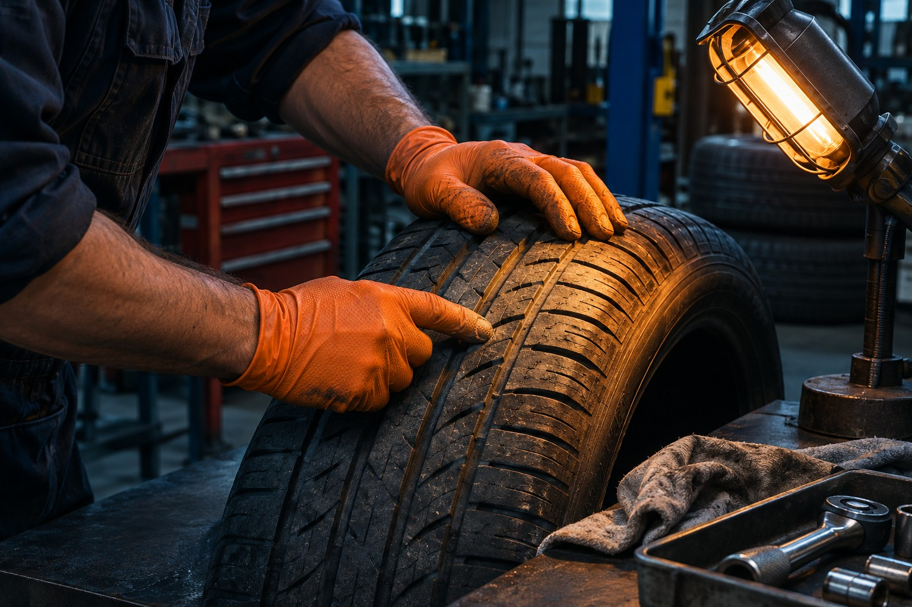

Из отзыва в 2ГИС
От звонка
до ремонта
- Колесо теряло воздух. Перед визитом клиент позвонил в мастерскую.
- На месте нашли саморез. По словам клиента, шину отремонтировали и проверили давление в остальных колёсах.
«Предварительно позвонил, мне очень вежливо всё объяснили.»